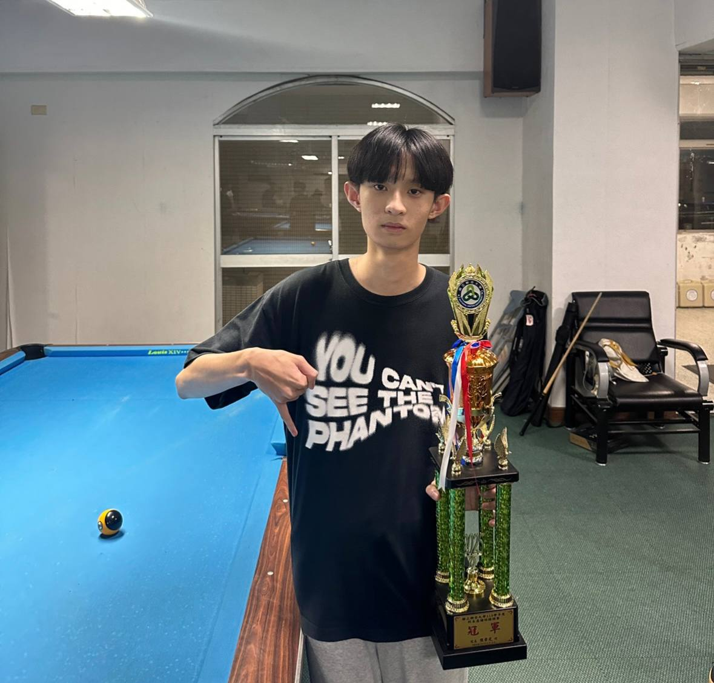
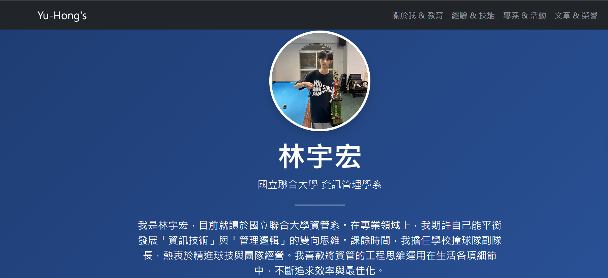
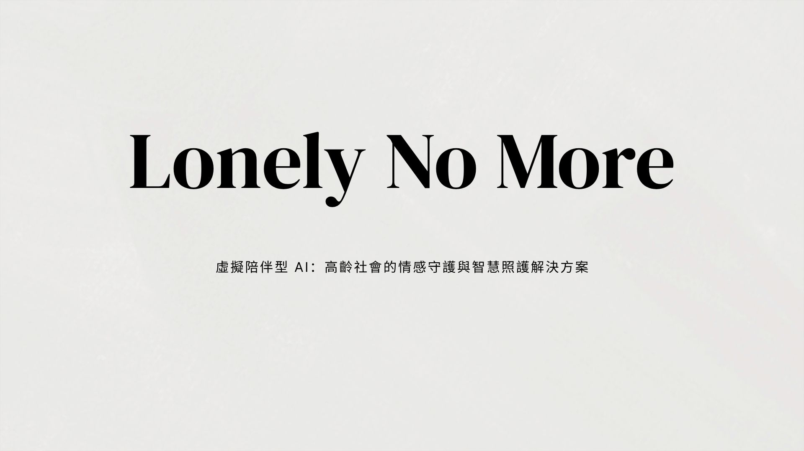
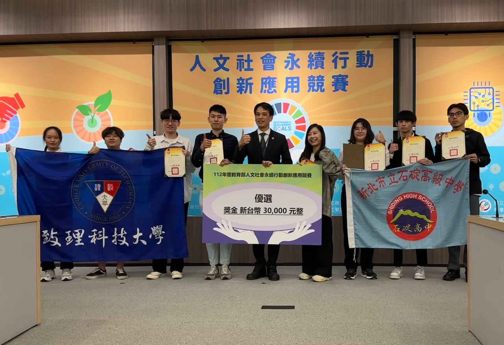
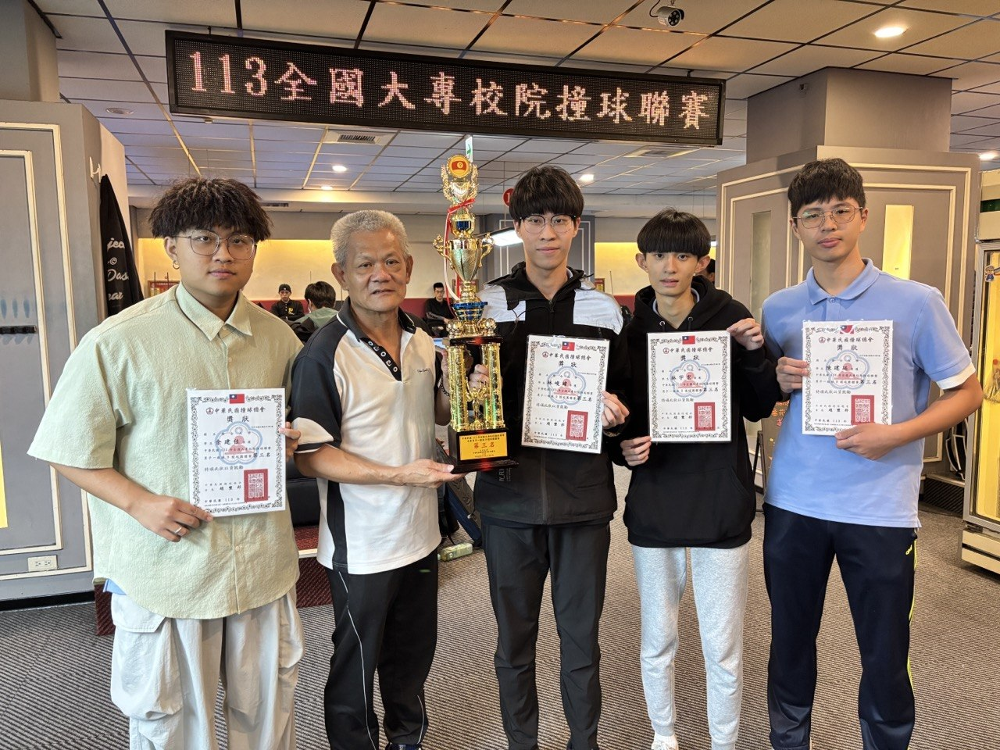

國立聯合大學 資訊管理學系
我是林宇宏，目前就讀於國立聯合大學資管系。在專業領域上，我期許自己能平衡發展「資訊技術」與「管理邏輯」的雙向思維。課餘時間，我擔任學校撞球隊副隊長，熱衷於精進球技與團隊經營。我喜歡將資管的工程思維運用在生活各項細節中，不斷追求效率與最佳化。
資訊管理學系 學士學位 | 2023 - 2027 (預計)
協助管理球隊日常行政、規劃隊內聯賽，並負責隊服設計與外部廠商溝通，培養協調與人際領導力。(預計於大三上學期開始擔任隊長職務)
於門市負責日常營運物料盤點與顧客服務，深入觀察連鎖醫藥零售業的門市管理實務與進銷存運作流程。
依據課堂實作與自主開發經驗之核心實力範疇：

技術：HTML5, CSS3, Bootstrap 5
前端網頁設計期末專案，獨立規劃響應式佈局與現代化 UI，建構高品質個人數位形象。

領域：高齡健康照護 / 創新藍圖
虛擬陪伴型 AI：高齡社會的情感守護與智慧醫療照護創新藍圖方案。


標籤：團隊合作 / 幹部經營
平日高強度隊內訓練，並於113年全國大專校院撞球聯賽榮獲第三名。
生成式技術雖然能自動化產出代碼與數據報告，但它無法取代人類具備的「情境洞察力」、「倫理同理心」與「核心戰略解讀」。資管系的核心價值就在於此...